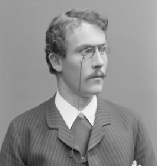
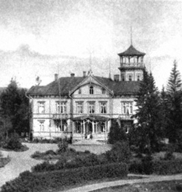
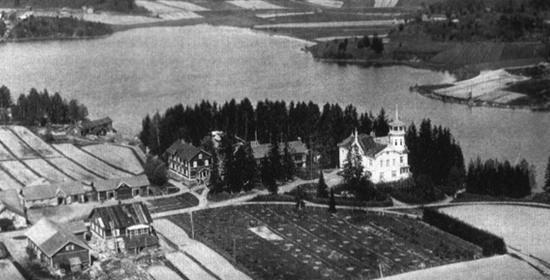
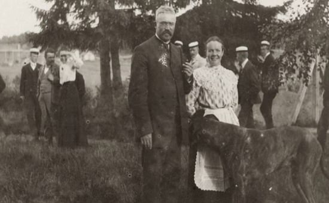
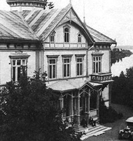
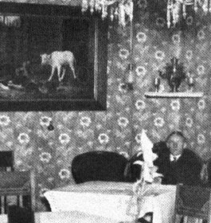
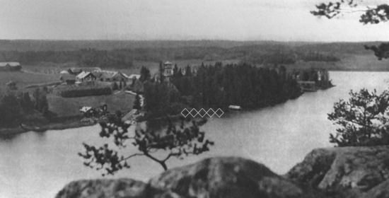
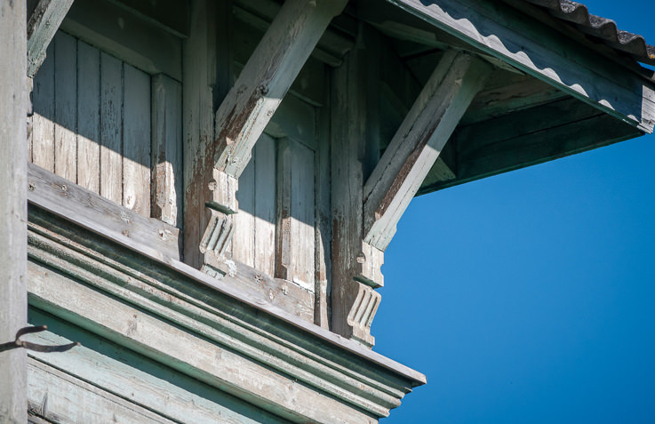
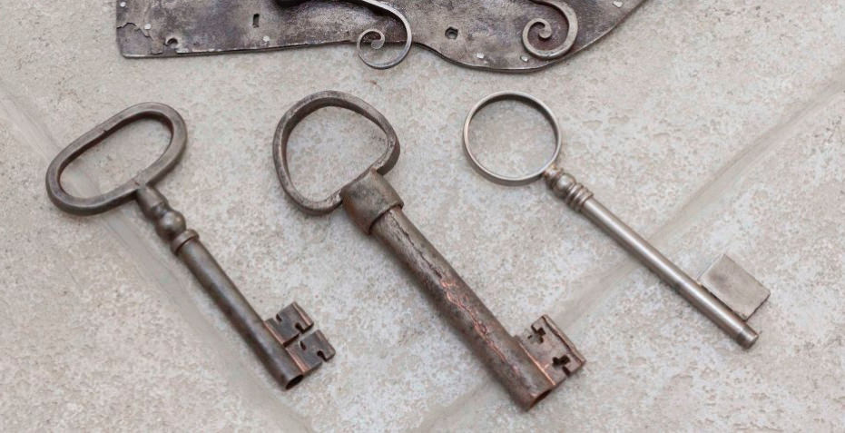

историческая усадьба четы ниссен
В 16-ти километрах от города Сортавала и в 35-ти от острова Валаам расположился небольшой поселок Ниэмелянхови с населением чуть более 250 человек. В центре поселка находится Усадьба с одноименным названием Ниэмелянхови.

Оскар Ниссен
Самые ранние постройки относятся к 1880 годам. Первое хозяйственное сооружение уже находилось на земельном участке, который приобрел землевладелец Оскар Ниссинен.

Северный модерн
Построенное в эпоху стиля «Северный модерн», оно находилось на вершине холма с видом на залив и являлось композиционным центром усадьбы.

813 га
В 1892 году появилось первое и главное двухэтажное деревянное здание – господская усадьба. Рядом с господским домом позднее стали появляться и другие постройки, со временем составившие целостную усадьбу.
В 1892 году рядом был построен каменный животноводческий комплекс, через 2 года был сооружен большой каретный сарай. Для хранения зерновых культур в Усадьбе был деревянный амбар, позднее был построен кирпичный элеватор. Многопрофильное хозяйство, каким стала Усадьба в конце 19 века, требовало рабочие руки. Специально для работников был сооружен жилой дом и здание учебных мастерских для подготовки квалифицированных фермеров. Усадьба была оснащен необходимыми, современными сооружениями и оборудованием.
Имелись: мельница, маслозавод, пилорама, трактор, гонторезный станок. Источником энергии был паровой мотор локомобиль, заказанный в Варкаусе, который поднимал и нагревал воду, крутил мельницу, молотилку, пилы, также сепараторы молокозавода и маслобойку. Основали также идеальный сад и вскоре свою электростанцию. Позже в Ниемелянхови была основана семейная компания по производству кирпича Ниемеля из природной глины на берегу Ладоги.
семейство Ниссен
Ниссинены прожили золотое время в развивающейся цветущей Карелии. За свои многочисленные достижения в различных областях супруги получали престижные премии и высокие награды, были особо отмечены правительством за вклад в развитие сельского хозяйства, науки, а также за многогранную общественную деятельность.

XX век

Объект туризма
В 1930-е гг. Усадьба и сельскохозяйственная школа в Ниэмелянхови были объектами туризма. В 1937-1939 гг. туристическая организация Финляндии предлагала путешественникам маршрут № 212 «Лахденпохья – Сортавала».

советские годы
В 1941-1945 гг. Усадьба оказалась в зоне боевых действий. В 1946 году, в зданиях Усадьбы разместилась трудовая колония, действовавшая почти десять лет, а затем, до конца 80-х годов, медицинское учреждение.

Памятник истории и культуры
В 90-х годах 20 века комплекс находился в плохом состоянии, происходил медленный процесс запустения и разрушения. В 1990-м году город Сортавала был включен в список исторических городов Российской Федерации. Вслед за этим, в начале 1990-х гг. проводилась инвентаризация памятников истории и культуры. В результате проведенных работ, часть сооружений «Ладожской Усадьбы» была признана памятниками истории и культуры.
наши дни
Ремонт и восстановление «Ладожской Усадьбы» Ниэмелянхови началось в 2011 и продолжается по настоящий момент. Основная задача архитекторов и мастеров в 21 веке – вернуть исторический облик крупной финской земледельческой Усадьбы конца ХIX - начала XX вв. района Северного Приладожья.

музей
Этнографические экспозиции музея являются яркой иллюстрацией быта и культуры Северного Приладожья конца XIX начала XX века.
- Господская усадьба Ниссиненов
- Маслозавод
- Элеватор
- Конюшня
- Учебные мастерские
- Амбар
